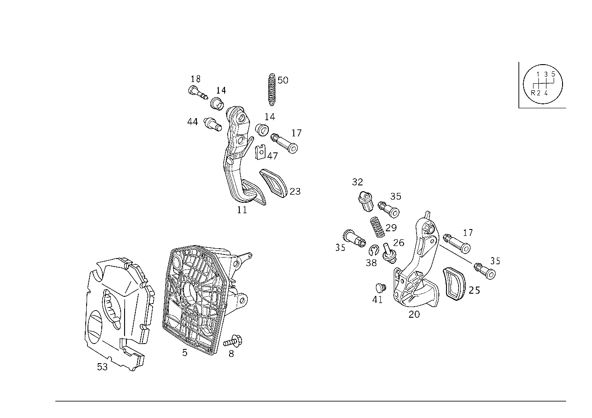

| № | Артикул | Название | Кол. | Примечание | Ограничение |
|---|---|---|---|---|---|
| 5 | A 168 290 00 49 | Пластина (PLATTE) | 1 | [402] БОЛЬШЕ НЕ ПОСТАВЛЯЕТСЯ | -421 |
| 5 | A 168 290 05 49 | Пластина (PLATTE) | 1 | -421 | |
| 5 | A 168 290 00 49 | Пластина (PLATTE) | 1 | [402] БОЛЬШЕ НЕ ПОСТАВЛЯЕТСЯ | 421 |
| 8 | N 910105 006035 | Винт с 6-гранной головкой (SECHSKANTSCHRAUBE) | 8 | ПЛАСТИНА ПЕДАЛИ; M6X30\-10.9 | |
| 8 | N 910105 006035 | Винт с 6-гранной головкой (SECHSKANTSCHRAUBE) | 8 | ПЛАСТИНА ПЕДАЛИ; M6X30\-10.9 | 421 |
| 11 | A 168 290 08 18 | Педаль тормоза (BREMSPEDAL) | 1 | Рулевое управление: Влево [402] БОЛЬШЕ НЕ ПОСТАВЛЯЕТСЯ | -421/-423 |
| 11 | A 168 290 02 18 | Педаль тормоза (BREMSPEDAL) | 1 | Рулевое управление: Вправо | -421/-423 |
| 11 | A 168 290 14 18 | Педаль тормоза (BREMSPEDAL) | 1 | Рулевое управление: Влево [402] БОЛЬШЕ НЕ ПОСТАВЛЯЕТСЯ | 421 |
| 11 | A 168 290 06 18 | Педаль (BREMSPEDAL) | 1 | Рулевое управление: Вправо [402] БОЛЬШЕ НЕ ПОСТАВЛЯЕТСЯ | 421 |
| 14 | A 124 292 00 50 | - Втулка подшипника (LAGERBUCHSE) | 2 | ||
| 14 | A 124 292 00 50 | - Втулка подшипника (LAGERBUCHSE) | 2 | 421 | |
| 17 | A 168 291 03 74 | Палец (BOLZEN) | 1 | СОЕДИНИТ. ПЕДАЛЬ НА ОПОРН. ЭЛЕМЕНТЕ | -(421/423/ME02) |
| 17 | A 168 291 03 74 | Палец (BOLZEN) | 1 | ПЕДАЛЬ ТОРМОЗА НА ОПОРЕ | |
| 17 | A 168 291 03 74 | Палец (BOLZEN) | 1 | ПЕДАЛЬ ТОРМОЗА НА ОПОРЕ | 421 |
| 17 | A 168 292 01 74 | Палец (BOLZEN) | 1 | ПЕДАЛЬ ТОРМОЗА НА ТОРМОЗ. БЛОКЕ | -839 |
| 18 | A 168 291 00 55 | Пробка (STOPFEN) | 1 | ПЕДАЛЬ ТОРМОЗА НА ОПОРЕ | |
| 18 | A 168 291 00 55 | Пробка (STOPFEN) | 1 | ПЕДАЛЬ ТОРМОЗА НА ОПОРЕ | 421 |
| 20 | A 168 291 00 01 | Педаль сцепления (KUPPLUNGSPEDAL) | 1 | Рулевое управление: Влево | -(421/423/ME01/ME02) |
| 20 | A 168 290 04 16 | Педаль (KUPPLUNGSPEDAL) | 1 | Рулевое управление: Влево | -(421/423/ME02) |
| 20 | A 168 291 02 01 | Педаль сцепления (KUPPLUNGSPEDAL) | 1 | Рулевое управление: Вправо | -(421/423) |
| 20 | A 168 290 05 16 | Педаль (KUPPLUNGSPEDAL) | 1 | Рулевое управление: Вправо [402] БОЛЬШЕ НЕ ПОСТАВЛЯЕТСЯ | -(421/423) |
| 23 | A 201 291 00 82 | Чехол (PEDALUEBERZUG) | 1 | ПЕДАЛЬ ТОРМОЗА | -(421/423)+-M21 |
| 23 | A 168 290 00 82 | Чехол (UEBERZUG) | 1 | ПЕДАЛЬ ТОРМОЗА | M166+M21+(421)/949 |
| 25 | A 201 291 00 82 | Чехол (PEDALUEBERZUG) | 1 | ПЕДАЛЬ СЦЕПЛЕНИЯ | |
| 25 | A 168 290 00 82 | Чехол (UEBERZUG) | 1 | ПЕДАЛЬ СЦЕПЛЕНИЯ | M166+M21/949 |
| 26 | A 168 291 00 33 | Штанга (STANGE) | 1 | ПРУЖИНА НАД МЕРТВ. ТОЧКОЙ | -(421/423/ME02) |
| 29 | A 168 993 15 01 | пружина (FEDER) | 1 | ПРУЖИНА НАД МЕРТВ. ТОЧКОЙ | M166+(M14/M16) |
| 29 | A 168 291 00 92 | пружина (FEDER) | 1 | ПРУЖИНА НАД МЕРТВ. ТОЧКОЙ Рулевое управление: Влево | -(421/423/ME02/839) |
| 29 | A 168 993 39 01 | пружина (FEDER) | 1 | ПРУЖИНА НАД МЕРТВ. ТОЧКОЙ | -(421/423/ME01/ME02) |
| 32 | A 168 291 00 91 | Тарелка пружины (FEDERTELLER) | 1 | ПРУЖИНА НАД МЕРТВ. ТОЧКОЙ | -(421/423/ME02) |
| 35 | A 168 292 00 74 | Палец (BOLZEN) | 1 | НАЖИМН. ШТАНГА НА ПЕДАЛИ СЦЕПЛ. Рулевое управление: Влево | -(421/423/ME02) |
| 35 | A 168 292 00 74 | Палец (BOLZEN) | 1 | ЦИЛИНДР ДАТЧИКА НА ПЕДАЛЬНОМ УЗЛЕ Рулевое управление: Влево | -(421/423/ME01/ME02) |
| 35 | A 168 292 00 74 | Палец (BOLZEN) | 1 | ТАРЕЛКА ПРУЖИНЫ КЛАПАНА | -(421/423/ME02) |
| 38 | N 006799 005002 | Стопорная шайба (SICHERUNGSSCHEIBE) | 1 | НАЖИМН. ШТАНГА НА ПЕДАЛИ СЦЕПЛ. Рулевое управление: Вправо | -(421/423) |
| 38 | N 006799 005002 | Стопорная шайба (SICHERUNGSSCHEIBE) | 1 | ЦИЛИНДР ДАТЧИКА НА ПЕДАЛЬНОМ УЗЛЕ Рулевое управление: Вправо | -(421/423) |
| 41 | A 168 291 00 86 | Упор (ANSCHLAG) | 1 | ПЕДАЛЬ СЦЕПЛЕНИЯ | M166+(M14/M16)/M668+M17+(M003/M013) |
| 44 | A 168 292 01 74 | Палец (BOLZEN) | 1 | ПЕДАЛЬ ТОРМОЗА НА ТОРМОЗ. БЛОКЕ | |
| 47 | N 912002 008003 | Механический фиксатор (MECHANISCHE SICHERUNG) | 1 | ПЕДАЛЬ ТОРМОЗА НА ТОРМОЗ. БЛОКЕ; 8 MM | |
| 47 | N 912002 008003 | Механический фиксатор (MECHANISCHE SICHERUNG) | 1 | ПЕДАЛЬ ТОРМОЗА НА ТОРМОЗ. БЛОКЕ; 8 MM | 421 |
| 50 | A 168 993 00 10 | Пружина растяжения (ZUGFEDER) | 1 | ПЕДАЛЬ ТОРМОЗА | |
| 50 | A 168 993 00 10 | Пружина растяжения (ZUGFEDER) | 1 | ПЕДАЛЬ ТОРМОЗА | 421 |
| 53 | A 168 294 00 15 | Вибро- и шумоизоляция (ABDAEMPFUNG) | 1 | -ME02 | |
| 53 | A 168 294 00 15 | Вибро- и шумоизоляция (ABDAEMPFUNG) | 1 | 421+-ME01 | |
| 60 | A 168 290 02 49 | ПЛАСТИНА ПЕДАЛИ | 1 | Рулевое управление: Влево | 423 |
| 60 | A 168 290 06 49 | Пластина (PLATTE) | 1 | Рулевое управление: Влево [402] БОЛЬШЕ НЕ ПОСТАВЛЯЕТСЯ | 423 |
| 65 | N 910105 006035 | Винт с 6-гранной головкой (SECHSKANTSCHRAUBE) | 8 | ПЛАСТИНА ПЕДАЛИ; M6X30\-10.9 | |
| 70 | A 168 294 00 15 | Вибро- и шумоизоляция (ABDAEMPFUNG) | 1 | 423+-ME01 | |
| 80 | A 168 290 15 18 | Педаль тормоза (BREMSPEDAL) | 1 | Рулевое управление: Влево | 423 |
| 80 | A 168 290 17 18 | Педаль тормоза (BREMSPEDAL) | 1 | Рулевое управление: Вправо [402] БОЛЬШЕ НЕ ПОСТАВЛЯЕТСЯ | 423 |
| 85 | A 124 292 00 50 | - Втулка подшипника (LAGERBUCHSE) | 2 | 423 | |
| 90 | A 123 291 00 82 | Накладка педали (PEDALUEBERZUG) | 1 | ПЕДАЛЬ ТОРМОЗА | 423 |
| 90 | A 170 290 01 82 | Чехол (UEBERZUG) | 1 | ПЕДАЛЬ ТОРМОЗА | (M166+M21/949)+(421/423) |
| 90 | A 168 300 01 82 | Чехол (UEBERZUG) | 1 | ПЕДАЛЬ ТОРМОЗА Рулевое управление: Вправо | M21/949 |
| 95 | A 168 292 01 74 | Палец (BOLZEN) | 1 | ПЕДАЛЬ ТОРМОЗА НА ТОРМОЗ. БЛОКЕ | 423 |
| 100 | N 912002 008003 | Механический фиксатор (MECHANISCHE SICHERUNG) | 1 | ПЕДАЛЬ ТОРМОЗА НА ТОРМОЗ. БЛОКЕ; 8 MM | 423 |
| 105 | A 168 291 03 74 | Палец (BOLZEN) | 1 | ПЕДАЛЬ ТОРМОЗА НА ОПОРЕ | 423 |
| 110 | A 168 291 00 55 | Пробка (STOPFEN) | 1 | 423 | |
| 115 | A 168 993 00 10 | Пружина растяжения (ZUGFEDER) | 1 | ПЕДАЛЬ ТОРМОЗА | 423 |
| 130 | A 168 292 00 31 | Рычаг (HEBEL) | 1 | ЗАВИС.ОТ ПЕДАЛИ ТОРМОЗА БЛОКИРОВКА ПОЛОЖ.ПАРКОВКИ Рулевое управление: Влево [402] БОЛЬШЕ НЕ ПОСТАВЛЯЕТСЯ | 423 |
| 130 | A 168 292 03 31 | Рычаг (HEBEL) | 1 | ЗАВИС.ОТ ПЕДАЛИ ТОРМОЗА БЛОКИРОВКА ПОЛОЖ.ПАРКОВКИ | 423 |
| 135 | A 168 294 00 74 | Палец (BOLZEN) | 1 | ПЕДАЛЬ ТОРМОЗА НА ТОРМОЗ. БЛОКЕ Рулевое управление: Влево | 423 |
| 140 | A 168 292 00 40 | Держатель (HALTER) | 1 | ЗАВИС.ОТ ПЕДАЛИ ТОРМОЗА БЛОКИРОВКА ПОЛОЖ.ПАРКОВКИ [402] БОЛЬШЕ НЕ ПОСТАВЛЯЕТСЯ | 423 |
| 140 | A 168 292 03 40 | Держатель (HALTER) | 1 | ЗАВИС.ОТ ПЕДАЛИ ТОРМОЗА БЛОКИРОВКА ПОЛОЖ.ПАРКОВКИ [402] БОЛЬШЕ НЕ ПОСТАВЛЯЕТСЯ | 423 |
| 150 | A 124 292 02 35 | Ролик (ROLLE) | 1 | ЗАВИС.ОТ ПЕДАЛИ ТОРМОЗА БЛОКИРОВКА ПОЛОЖ.ПАРКОВКИ Рулевое управление: Влево | 423 |
| 160 | N 006799 005002 | Стопорная шайба (SICHERUNGSSCHEIBE) | 1 | ЗАВИС.ОТ ПЕДАЛИ ТОРМОЗА БЛОКИРОВКА ПОЛОЖ.ПАРКОВКИ Рулевое управление: Влево | 423 |
| 160 | N 006799 005002 | Стопорная шайба (SICHERUNGSSCHEIBE) | 1 | SHIFT LOCK LEVER TO BRACKET Рулевое управление: Влево | 423 |
| 170 | A 168 292 01 31 | Рычаг (HEBEL) | 1 | ЗАВИС.ОТ ПЕДАЛИ ТОРМОЗА БЛОКИРОВКА ПОЛОЖ.ПАРКОВКИ Рулевое управление: Влево [402] БОЛЬШЕ НЕ ПОСТАВЛЯЕТСЯ | 423 |
| 180 | A 168 292 04 31 | Рычаг (HEBEL) | 1 | ЗАВИС.ОТ ПЕДАЛИ ТОРМОЗА БЛОКИРОВКА ПОЛОЖ.ПАРКОВКИ | 423 |
| 190 | A 210 993 06 10 | пружина (FEDER) | 1 | ЗАВИС.ОТ ПЕДАЛИ ТОРМОЗА БЛОКИРОВКА ПОЛОЖ.ПАРКОВКИ Рулевое управление: Влево | 423 |
| 190 | A 210 993 06 10 | пружина (FEDER) | 1 | ЗАВИС.ОТ ПЕДАЛИ ТОРМОЗА БЛОКИРОВКА ПОЛОЖ.ПАРКОВКИ Рулевое управление: Вправо | 423 |
| 200 | A 168 292 01 87 | пружина (FEDER) | 1 | FROM LOCKING TO RELEASE LEVER | 423 |
| 210 | A 168 292 01 40 | Держатель (HALTER) | 1 | TENSION SPRING TO PEDAL BEARING BRACKET Рулевое управление: Влево [402] БОЛЬШЕ НЕ ПОСТАВЛЯЕТСЯ | 423 |
| 220 | A 202 990 02 36 | Винт с 6-гранной головкой (SECHSKANT-BLECHSCHRAUBE) | 1 | TENSION SPRING TO PEDAL BEARING BRACKET; 5X16 Рулевое управление: Влево | 423 |
| 230 | A 168 290 05 85 | Трос (SEILZUG) | 1 | PEDAL ASSEMBLY TO STEERING LOCK | 423 |
| 230 | A 168 290 20 85 | Трос (SEILZUG) | 1 | PEDAL ASSEMBLY TO STEERING LOCK [402] БОЛЬШЕ НЕ ПОСТАВЛЯЕТСЯ | 423 |
| 240 | A 168 290 09 85 | Трос (SEILZUG) | 1 | TO PEDALS Рулевое управление: Влево [402] БОЛЬШЕ НЕ ПОСТАВЛЯЕТСЯ | 423 |
| 240 | A 168 290 11 85 | Трос (SEILZUG) | 1 | TO PEDALS Рулевое управление: Вправо | 423 |
| 250 | A 168 290 08 85 | Трос (SEILZUG) | 1 | К КП [402] БОЛЬШЕ НЕ ПОСТАВЛЯЕТСЯ [001134] UP TO IDENT. NO.: J 317868 | 423 |
| 250 | A 168 290 19 85 | Трос (SEILZUG) | 1 | К КП [001135] AS OF IDENT. NO.: J 317869 | 423 |
| 260 | N 912007 006001 | Зажим (CLIP) | 1 | CONTROL CABLE TO STEERING LOCK | 423 |
| 260 | N 000000 007128 | Зажим (CLIP) | 1 | CONTROL CABLE TO STEERING LOCK | 423 |
| 270 | A 168 988 06 78 | Скоба (KLAMMER) | 1 | ТРОС.ТЯГА НА МАСЛОЗАЛИВ.ТРУБКЕ [001134] UP TO IDENT. NO.: J 317868 [402] БОЛЬШЕ НЕ ПОСТАВЛЯЕТСЯ | (M166/M668)+423 |
| 280 | A 000 995 62 44 | хомут (SCHELLE) | 1 | Рулевое управление: Влево [001134] UP TO IDENT. NO.: J 317868 | 423 |
| 290 | A 004 997 98 90 | Кабельная стяжка (KABELBINDER) | 2 | 3.4 X 375 MM | 423 |
Позиций: 84 · подписано на схемах: 84 · колесо — плавный зум в курсор, перетаскивание — пан, двойной клик — зум, клик по артикулу — скопировать.